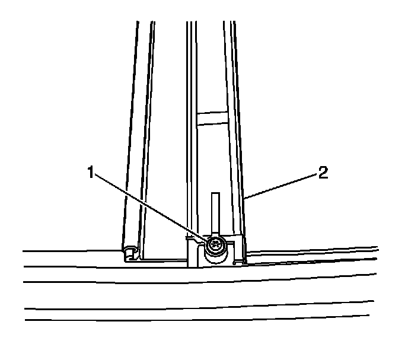
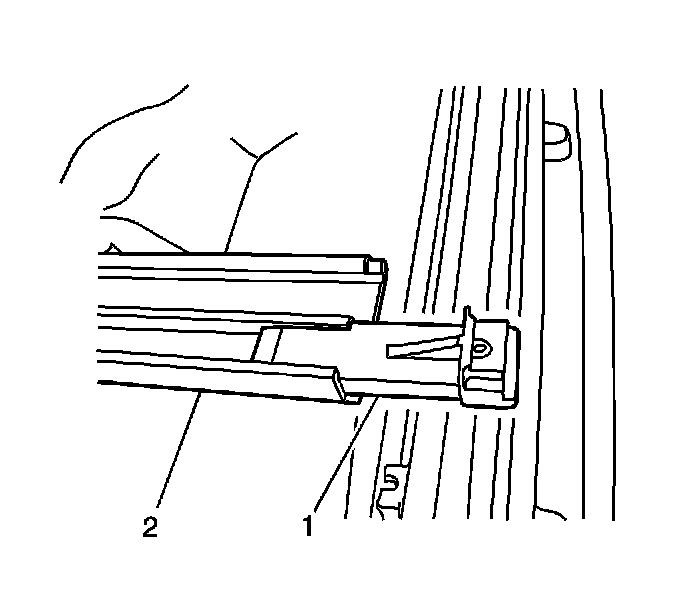
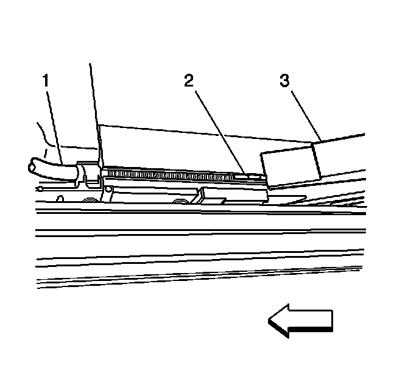
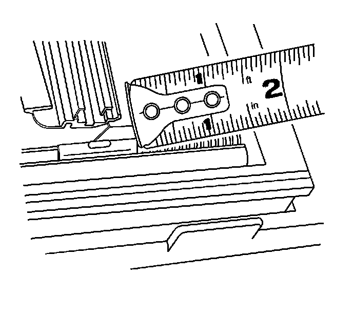

Sunroof Sunshade Cable Assembly Replacement (Front)
Sunroof Sunshade Cable Assembly Replacement (Front)
Removal Procedure
1. Open the sunshade to the full open position.
2. Remove the front sunroof window. Refer to Sunroof Window Replacement (Front) (Service and Repair)Sunroof Window Replacement (Rear Vent) (Service and Repair)Sunroof Window Replacement (Center) (Service and Repair)Sunroof Window Replacement (Rear Stationary) (Service and Repair) .
3. Remove the center window panel. Refer to Sunroof Window Replacement (Front) (Service and Repair)Sunroof Window Replacement (Rear Vent) (Service and Repair)Sunroof Window Replacement (Center) (Service and Repair)Sunroof Window Replacement (Rear Stationary) (Service and Repair) .

4. Remove the front sunshade motor/actuator (2). Refer to Sunroof Sunshade Motor/Actuator Replacement (Sunroof Sunshade Motor/Actuator Replacement) .

5. Remove the sunshade stop set-screw (3) from the front of the track assembly.

6. Remove the screws on the sunshade link (2) to disengage the link from the sunshade cable barrel (4).

7. Remove the sunshade link (1) from the sunshade channel (2).
Important: The sunshade has tension at all times. Use caution when removing the sunshade links at the same time.
Use a flat-bladed tool on the top side of the barrel to push the cable assembly forward until the barrel end leaves the front track assembly.
8. Pull outward on the cable to remove the sunshade cable from the sunroof window front track assembly.
Installation Procedure

1. Install the bullet end of the sunshade cable to the end of the U-channel (3). The U-channel is located on the front of the track assembly (2).
2. Push the cable into the U-channel until the barrel end of the cable reaches 25 mm (1 in) from the end of the U-channel.

3. Use a flat-bladed tool (3) to push the cable (2) through the channel.

4. Push the cable until the cable barrel is approximately 32 mm (1.25 in) from the end of the sunroof track from the rear.
5. Install the sunshade stop set-screw (3) flush to the front edge of the U-channel.
Important: If the sunshade set screw is misadjusted or not installed in the track channel, the sunshade will not function properly. The initialization process for the sunshade will not work.
6. Ensure that the sunshade is folded one-half turn over the sunshade channel.
7. Install the sunshade link (1) into the channel.
Notice: Refer to Fastener Notice (Fastener Notice) .
8. Install the sunshade screw (1) to the sunshade link (2).
Tighten the screw to 2 N.m (18 lb in).
9. Install the front sunshade motor/actuator (2). Refer to Sunroof Sunshade Motor/Actuator Replacement (Sunroof Sunshade Motor/Actuator Replacement) .
10. Install the center window panel. Refer to Sunroof Window Replacement (Front) (Service and Repair)Sunroof Window Replacement (Rear Vent) (Service and Repair)Sunroof Window Replacement (Center) (Service and Repair)Sunroof Window Replacement (Rear Stationary) (Service and Repair) .
11. Install the front window panel. Refer to Sunroof Window Replacement (Front) (Service and Repair)Sunroof Window Replacement (Rear Vent) (Service and Repair)Sunroof Window Replacement (Center) (Service and Repair)Sunroof Window Replacement (Rear Stationary) (Service and Repair) .
12. Perform the front sunshade initialization procedure. Refer to Sunroof Front Window/Sunshade Initialization Process (Sunroof Front Window/Sunshade Initialization Process) .